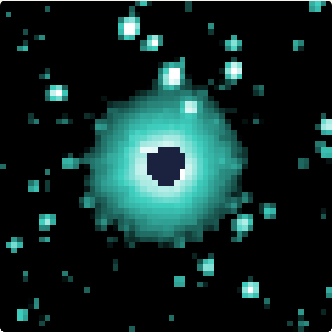

The runaway
Mission 1 of 6 · Skill: BlinkThe runaway · step 2 of 3
The runaway
Barnard's Star · a small red star, 6 light-years away
- 2
One dot jumps. Tap it.
These pictures were taken months apart. Stars stay put. Look for the one that doesn't.
Look near the middle. Step from A to C with the arrow keys and watch closely.
- 3
One dot jumps. Tap it.
Stars stay put between these pictures. Look for the one that doesn't.
Another hintShow me
Space play ←→ step Tab then arrows to pick a dot
Barnard's Star
Real data · NASA SPHEREx· D3 1.7 µm

BMar 2026· picture 2 of 3
AAug 2025Pass 1
BMar 2026Pass 2
CAug 2026Pass 3
Real SPHEREx data, DR1 and QR3 · 16 Aug 2025 to 17 Aug 2026 · D3, 1.67–1.79 µm
Average of all dates: moving things blur here · SPHEREx 2.00 µm